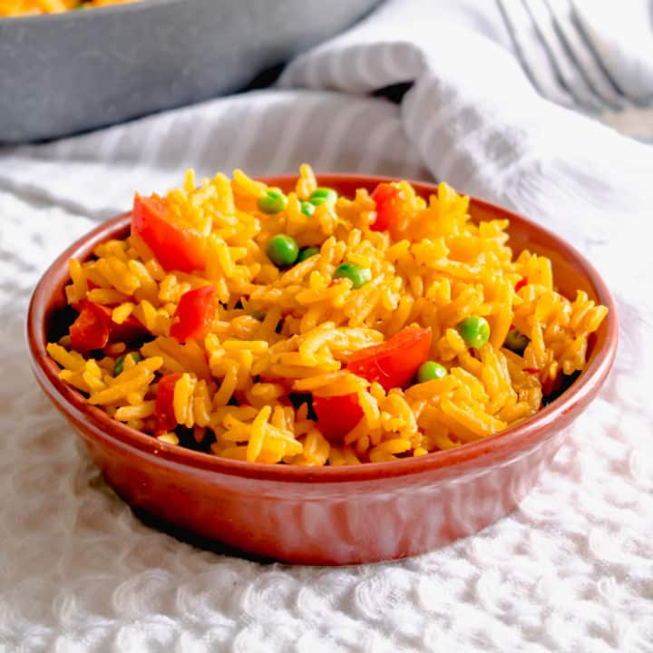

Spicy Rice

Here’s my recipe for Nando’s style spicy rice.
Tasty, mildy spicy rice which you can cook at home!
The Portuguese restaurant’s popular side dish is made using
fluffy rice, turmeric and cumin.
This rice has onions, peppers and peas in it – it’s
perfect paired with chicken!
One of the benefits of making this at home
(despite it honestly being BETTER than Nandos rice)
is you can cook as much as you like! I tend to cook a
large pan full and then eat it throughout the week with
different dishes. It works great with chicken, fish,
or just about any meat.
Ingredients:
- 1 tbsp oil
- 1 tsp cumin
- 1/4 tsp dried chilli flakes
- 1 tbsp turmeric
- 1/2 tsp paprika
- 1/2 tsp paprika
- 500g water
- 1 chicken stock cube, (You could use vegetable stock instead)
- 120g peas
- 1/2 onion (diced)
- 1/2 red pepper (diced)
Steps:
- Chop the onion and pepper into small pieces
- Heat oil in a large non-stick pan
- Add onions and peppers and cook for a few minutes
- Add spice mixture
- Stir to coat the onions and peppers and cook for a few moments
- Add the rice, water and chicken stock
- Bring mixture to boil
- Then add peas and reduce the heat to as low as possible
- Cover with a lid and cook on very low for around 30 minutes
(or until rice is cooked)
- Mix a few times throughout the cooking time to make sure the
rice doesn’t stick to the bottom of the pan